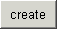
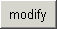
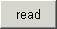
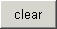
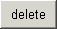

| Button | Description |
|---|---|
|  | Creates a new node with the name and location given in the Node Description panel. If a Link Node has been specified in the Link Description panel, the node will be created as a link, otherwise the data properties given in the Data Description and Node Data panels will be applied the the node. |
|  | Applies changes to the node selected in the the Node Tree panel. If changes have been made to the node location or name in the Node Description panel, the node will be moved. If changes have been made in the Link Description panel, the node will be changed to or from a link, depending on the value in the Link Node field. If the node is not a link, the data properties in the Data Description and Node Data panels will be applied the the node, including data type conversions if needed. |
|  | Reads the node data and displays it in the Node Data panel. This will always read the data, regardless of the Auto Load Data settings. |
|  | Clears the Node Data panel. This is recommended when doing data type conversions for existing data, otherwise the data in the panel will be used for the conversion, with a possible loss in accuracy. |
|  | Deletes the currently selected node. If the Verify Delete option is enabled, the user will be prompted to verify deletion prior to deleting the node. |